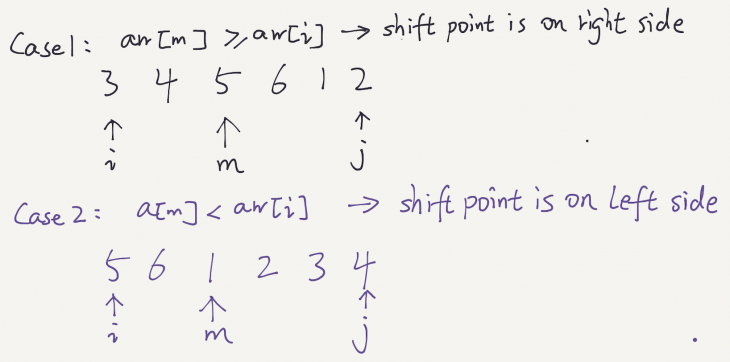

LeetCode Problem
33. Search in Rotated Sorted Array
Link to LeetCode
There is an integer array nums sorted in ascending order (with distinct values).
Prior to being passed to your function, nums is possibly left rotated at an unknown index k (1 <= k < nums.length) such that the resulting array is [nums[k], nums[k+1], ..., nums[n-1], nums[0], nums[1], ..., nums[k-1]] (0-indexed). For example, [0,1,2,4,5,6,7] might be left rotated by 3 indices and become [4,5,6,7,0,1,2].
Given the array nums after the possible rotation and an integer target, return the index of target if it is in nums, or -1 if it is not in nums.
You must write an algorithm with O(log n) runtime complexity.
Example 1:
Input: nums = [4,5,6,7,0,1,2], target = 0
Output: 4
Example 2:
Input: nums = [4,5,6,7,0,1,2], target = 3
Output: -1
Example 3:
Input: nums = [1], target = 0
Output: -1
In order to use binary search on the rotated sorted array, we need to determine how to update the left and right pointers. There are two major cases as shown below:

Once the two cases are identified, the problem is straightforward to solve. We only need to check if the target element is in the sorted side, and based on that move left or right pointers.
public int search(int[] nums, int target) {
int left = 0;
int right= nums.length-1;
while(left<=right){
int mid = left + (right-left)/2;
if(target==nums[mid])
return mid;
if(nums[left]<=nums[mid]){
if(nums[left]<=target&& target< nums[mid]){
right=mid-1;
}else{
left=mid+1;
}
}else{
if(nums[mid]< target&& target<=nums[right]){
left=mid+1;
}else{
right=mid-1;
}
}
}
return -1;
}